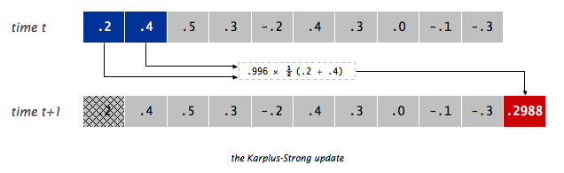

项目 1C：Deque61B 增强
截止日期：2 月 20 日星期二，太平洋时间晚上 11:59
常见问题
每个作业顶部都会有一个常见问题链接。你也可以通过在 URL 末尾添加“/faq”来访问它。项目 1C 的常见问题位于 这里 。
简介
在项目 1A 中，我们构建了
LinkedListDeque61B
，在项目 1B 中，我们构建了
ArrayDeque61B
。现在我们将看到一个不同的实现：
MaxArrayDeque61B
！项目的这一部分将为你之前的
ArrayDeque61B
和
LinkedListDeque61B
提供一些增强功能，并将所有内容整合到你新构建的数据结构的应用中。
在项目 1C 结束时，你将完成以下内容：
-
为
LinkedListDeque61B.java和ArrayDeque61B.java编写iterator()、equals()和toString()方法。 -
实现
MaxArrayDeque61B.java。 -
完成
GuitarHero任务。
本节假设你已经观看并完全理解了直到第 11 讲（迭代器、对象方法）的所有课程内容。
代码风格
与项目 1B 一样， 我们将强制执行代码风格要求 。你必须遵循 风格指南 ，否则你会在自动评分器上被扣分。
你可以而且应该使用 CS 61B 插件在本地检查你的代码风格。 我们不会因为未检查风格而取消速度限制。
获取骨架文件
按照
作业工作流程指南
中的说明获取骨架代码并在 IntelliJ 中打开。对于这个项目，我们将在
proj1c
目录中工作。
你会看到你的仓库中出现了一个
proj1c
目录，结构如下：
proj1c
├── src
│ ├── deque
│ │ ├── ArrayDeque61B.java
│ │ ├── Deque61B.java
│ │ └── LinkedListDeque61B.java
│ └──gh2
│ ├── GuitarHeroLite.java
│ ├── GuitarPlayer.java
│ ├── GuitarString.java
│ └── TTFAF.java
│
└── tests
├── MaxArrayDeque61BTest.java
└── TestGuitarString.java
如果你遇到某种错误，请停下来，要么仔细阅读 git 常见问题 来解决，要么在答疑时间或 Ed 上寻求帮助。 与猜测和检查 git 命令相比，这可能会为你节省很多麻烦。如果你发现自己试图使用 Google 推荐的命令，比如
force push， 不要这样做 。不要使用 force push，即使你在 栈 Overflow 上找到的帖子说要这样做！
你也可以观看 Hug 教授的 演示视频 了解如何开始，如果你遇到一些 git 问题，可以观看这个 视频 。
对象方法
如果你愿意，可以按照这个简短的 视频指南 中的步骤来帮助你开始项目 1C！
为了实现以下方法，你应该首先将项目 1A 和项目 1B 中
LinkedListDeque61B
和
ArrayDeque61B
的实现复制并粘贴到
proj1c
目录中的相应文件中。
请在两个文件的顶部保留
package deque;
。否则，你的代码将无法编译。
iterator()
我们的
Deque61B
接口的一个缺点是它不能被迭代。也就是说，下面的代码无法编译，错误为“foreach 不适用于该类型”。
Deque61B<String> lld1 = new LinkedListDeque61B<>();
lld1.addLast("front");
lld1.addLast("middle");
lld1.addLast("back");
for (String s : lld1) {
System.out.println(s);
}
类似地，如果我们尝试编写一个测试来检查我们的
Deque61B
是否包含一组特定的项目，我们也会得到一个编译错误，在这种情况下是：“Cannot resolve method containsExactly in Subject”。
public void addLastTestBasicWithoutToList() {
Deque61B<String> lld1 = new LinkedListDeque61B<>();
lld1.addLast("front"); // after this call we expect: ["front"]
lld1.addLast("middle"); // after this call we expect: ["front", "middle"]
lld1.addLast("back"); // after this call we expect: ["front", "middle", "back"]
assertThat(lld1).containsExactly("front", "middle", "back");
}
同样，问题在于我们的对象不能被迭代。
Truth
库通过迭代我们的对象来工作（如第一个例子），但我们的
LinkedListDeque61B
不支持迭代。
要解决这个问题，你应该首先修改
Deque61B
接口，使其声明为：
public interface Deque61B<T> extends Iterable<T> {
接下来，使用第 11 讲中描述的技术实现
iterator()
方法。
任务 ：根据课程内容，在
LinkedListDeque61B和ArrayDeque61B中实现iterator()方法。
你不允许在这里调用
toList
。
equals()
考虑以下代码：
@Test
public void testEqualDeques61B() {
Deque61B<String> lld1 = new LinkedListDeque61B<>();
Deque61B<String> lld2 = new LinkedListDeque61B<>();
lld1.addLast("front");
lld1.addLast("middle");
lld1.addLast("back");
lld2.addLast("front");
lld2.addLast("middle");
lld2.addLast("back");
assertThat(lld1).是EqualTo(lld2);
}
如果我们运行这段代码，我们会看到测试失败，消息如下：
expected: [front, middle, back]
but was : (non-equal instance of same class with same string representation)
问题在于
Truth
库使用了
LinkedListDeque61B
类的
equals
方法。默认实现由下面的
代码
给出：
public boolean equals(Object obj) {
return (th是 == obj);
}
也就是说，equals 方法只是检查两个对象的地址是否相同。我们希望能够检查两个
Deque61B
对象在元素和顺序方面是否相等，因此我们需要一个不同的
equals
方法。
在
ArrayDeque61B
和
LinkedListDeque61B
类中重写 equals 方法。有关编写
equals
方法的指导，请参阅
课程幻灯片
或
课程代码仓库
。
注意：你可能会问，为什么我们要在两个类中实现相同的方法，而不是在
Deque61B接口中提供一个default方法。接口不允许提供重写Object方法的default方法。有关更多信息，请参阅 https://stackoverflow.com/questions/24595266/why-is-it-not-allowed-add-tostring-to-interface-as-default-method 。但是，一个解决方法是在
Deque61B接口中提供一个default、非Object的辅助方法，并让实现类调用它。
在
LinkedListDeque61B
和
ArrayDeque61B
类中重写
equals()
方法。
重要提示：你不应该使用
getClass，并且在你的equals方法中不需要进行任何类型转换。也就是说，你不应该做(ArrayDeque61B) o这样的操作。这样的equals方法是过时且过于复杂的。请使用instanceof代替。注意：
instanceof运算符在泛型类型上的行为有点奇怪，原因超出了本课程的范围。例如，如果你想检查lst是否是List<Integer>的实例，你应该使用lst instanceof List<?>而不是lst instanceof List<Integer>。不幸的是，这无法检查元素的类型，但这是我们能做的最好的了。
重要提示：确保在重写方法时使用
@Override
注解。学生代码中一个常见的错误是试图重写
equals(ArrayList<T> other)
而不是
equals(Object other)
。如果你犯了这个错误，使用可选的
@Override
注解会阻止你的代码编译。
@Override
是一个很好的安全网。
你不允许在这里调用
toList
。
toString()
考虑下面的代码，它打印出一个
LinkedListDeque61B
。
Deque61B<String> lld1 = new LinkedListDeque61B<>();
lld1.addLast("front");
lld1.addLast("middle");
lld1.addLast("back");
System.out.println(lld1);
这段代码输出类似
deque.proj1a.LinkedListDeque61B@1a04f701
的内容。这是因为打印语句隐式调用了
LinkedListDeque61B
的
toString
方法。由于你没有重写这个方法，它使用默认实现，由下面的代码给出（你不需要理解这段代码是如何工作的）。
public String toString() {
return getClass().getName() + "@" + Integer.toHexString(hashCode());
}
反过来，你也没有重写的
hashCode
方法，只是返回对象的地址，在上面的例子中是
1a04f701
。
任务
：在
LinkedListDeque61B
和
ArrayDeque61B
类中重写
toString()
方法，使得上面的代码输出
[front, middle, back]
。
提示：Java 的
List接口实现有一个toString方法。提示：有一个一行代码的解决方案（见提示 1）。
提示：你对
LinkedListDeque61B和ArrayDeque61B的实现应该完全相同。
测试对象方法
我们没有为这三个对象方法提供测试文件；但是，我们强烈建议你使用从项目 1A 和 1B 中学到的技术来编写自己的测试。你可以按照自己喜欢的方式组织这些测试，因为我们不会测试它们。一种可能（且建议）的结构是在
tests
目录中创建两个新文件，分别名为
LinkedListDeque61BTest
和
ArrayDeque61BTest
，类似于我们在 1A 和 1B 中给你的那些。
MaxArrayDeque61B
在你完全实现了
ArrayDeque61B
并测试了其正确性之后，你现在将构建
MaxArrayDeque61B
。
MaxArrayDeque61B
拥有
ArrayDeque61B
的所有方法
，但它还有 2 个额外的方法和一个新的构造函数：
-
public MaxArrayDeque61B(Comparator<T> c)：使用给定的Comparator创建一个MaxArrayDeque61B。（你可以为此导入java.util.Comparator。） -
public T max()：返回由先前给定的Comparator决定的双端队列中的最大元素。如果MaxArrayDeque61B为空，只需返回null。 -
public T max(Comparator<T> c)：返回由参数Comparator c决定的双端队列中的最大元素。如果MaxArrayDeque61B为空，只需返回null。
MaxArrayDeque61B
可以通过使用构造函数中给定的
Comparator<T>
来告诉你自身中的最大元素，或者使用与构造函数中给定的不同的任意
Comparator<T>
。
我们不关心这个类的
equals(Object o)
方法，所以你可以随意定义你认为最合适的方式。我们不会测试这个方法。
为了测试，你可以在自己的测试文件中使用
Comparator.naturalOrder()
。这个
Comparator
使用了
naturalOrder()
。
如果你的泛型类型是
Integer
，你可以使用以下示例创建你的
MaxArrayDeque61B
：
MaxArrayDeque61B<Integer> m = new MaxArrayDeque61B<Integer>(Comparator.naturalOrder());
如果你发现自己一开始就把整个
ArrayDeque61B实现复制到MaxArrayDeque61B文件中，那么你 没有按照预期的方式完成这个作业 。这是一个关于整洁代码的练习，而冗余是我们对抗复杂性时最大的敌人之一！要获取提示，请重新阅读本节上面的第二句话。
任务
：根据上面的 API 填写
MaxArrayDeque61B.java
文件。
这些额外的方法没有运行时间要求，我们只关心你答案的正确性。有时，
MaxArrayDeque61B
中可能有多个元素都相等，因此都是最大值：在这种情况下，你可以返回其中任何一个，它们都将被认为是正确的。
你也应该为这部分编写测试！你可能会创建多个
Comparator<T>
类来测试你的代码：这就是重点！练习使用
Comparator
对象来做一些有用的事情（找到最大元素），并练习编写你自己的
Comparator
类。你不需要提交这些测试，但我们仍然强烈建议你为自己创建它们。
你不会在下一部分使用你制作的
MaxArrayDeque61B
；它将是一个独立的练习。
吉他英雄
在项目的这一部分，我们将创建另一个包，使用我们刚刚制作的
deque
包来生成合成乐器。我们将有机会使用我们的数据结构来实现一个算法，该算法允许我们模拟拨动吉他弦的声音。
GH2 包
gh2
包只有一个你需要编辑的主要组件：
-
GuitarString，一个使用Deque61B<Double>来实现 Karplus-Strong 算法 来合成吉他弦声音的类。
我们为你提供了
GuitarString
的骨架代码，你将在其中使用你在项目第一部分中制作的
deque
包。
GuitarString
我们想要完成
GuitarString
文件，它应该使用
deque
包来复制拨动琴弦的声音。请注意，这个文件使用了“buffer”一词，在这种情况下它是“deque”的同义词。
我们将使用 Karplus-Strong 算法，用
Deque61B
来实现它非常容易。它只是以下三个步骤：
-
用随机噪声（-0.5 到 0.5 之间的
double值）替换Deque61B中的每个项目。 -
播放
Deque61B前面的double值。 -
移除
Deque61B中前面的double值，并将其与Deque61B中的下一个double值取平均值（提示：使用removeFirst()和get()），再乘以 0.996 的能量衰减因子（我们将整个量称为newDouble）。然后，将newDouble添加到Deque61B的后面。回到步骤 2（并永远重复）。
或者从视觉上看，如果
Deque61B
如顶部所示，我们将播放 0.2，移除它，将其与 0.4 组合形成 0.2988，并添加 0.2988。

你可以使用
StdAudio.play
方法播放一个
double
值。例如，
StdAudio.play(0.333)
会告诉你的扬声器振膜伸展到其总范围的 1/3，
StdAudio.play(-0.9)
会告诉它向后拉伸几乎达到它能达到的最大程度。扬声器振膜的移动会置换空气，如果你以优美的模式置换空气，这些扰动会被你的意识解释为悦耳的声音，这要归功于数十亿年的进化。
请参阅
此页面
了解更多信息。如果你只是执行
StdAudio.play(0.9)
然后再也不播放任何东西，图中显示的振膜就会静止在向前 9/10 的位置。
完成
GuitarString.java
，使其实现 Karplus-Strong 算法。请注意，你必须在
GuitarString
构造函数中用零填充你的
Deque61B
缓冲区。部分过程将由
GuitarString
类的客户端处理。你只需要完成标有
TODO
的任务。
不要在
GuitarString.java中调用StdAudio.play。这会导致自动评分器崩溃。GuitarPlayer.java已经为你做了这件事。
确保像往常一样添加库，否则 IntelliJ 将无法找到
StdAudio
。
例如，提供的
TestGuitarString
类提供了一个示例测试
testPluckTheAString
，它尝试在吉他弦上播放 A 音符。如果你运行测试，运行此测试时应该会听到 A 音符。如果没有，你应该尝试
testTic
方法并从那里开始调试。考虑在
GuitarString.java
中添加一个
print
或
toString
方法，这将帮助你查看每次 tic 之间发生了什么。
注意：我们在这里说了
Deque61B
，但没有指定使用哪个
Deque61B
实现。这是因为我们只需要
addLast
、
removeFirst
和
get
这些操作，而且我们知道实现
Deque61B
的类都有这些方法。所以你可以自由选择
LinkedListDeque61B
或
ArrayDeque61B
作为实际实现。作为一个可选（但强烈建议）的练习，思考一下使用其中一个与另一个的权衡，并与你的朋友讨论你认为哪个是更好的选择，或者它们是否都是同样好的选择。
工作原理
使 Karplus-Strong 算法工作的两个主要组件是环形缓冲区反馈机制和平均操作。
- 环形缓冲区反馈机制 。环形缓冲区模拟能量来回传播的介质（两端固定的弦）。环形缓冲区的长度决定了所产生声音的基频。在声音上，反馈机制只增强基频及其泛音（基频整数倍的频率）。能量衰减因子（在这种情况下为 0.996）模拟了波在弦中往返时能量的轻微耗散。
- 平均操作 。平均操作用作温和的低通滤波器（它去除较高频率，同时允许较低频率通过，因此得名）。由于它位于反馈路径中，这会产生逐渐衰减较高泛音同时保留较低泛音的效果，这与拨动吉他弦的声音非常相似。
GuitarHeroLite
你现在应该也能够使用
GuitarHeroLite
类了。运行它将提供一个图形界面，允许用户（你！）使用
gh2
包的
GuitarString
类来交互式地播放声音。
提交
要提交项目，请添加并提交你的文件，然后推送到你的远程仓库。然后，前往 Gradescope 上的相关作业并在那里提交。
这个作业的自动评分器将有以下速度限制方案：
- 从项目发布到截止日期，你将有 4 个令牌；每个令牌每 24 小时刷新一次。
评分
这个项目与项目 0 类似，分为各个组件，你必须 完全正确 地实现每个组件才能获得分数。
-
LinkedListDeque61B对象方法 (20%) ：在LinkedListDeque61B中正确实现iterator、equals和toString。 -
ArrayDeque61B对象方法 (20%) ：在ArrayDeque61B中正确实现iterator、equals和toString。 -
MaxArrayDeque61B功能 (5%) ：确保你的MaxArrayDeque61B正确运行Deque61B接口中的所有方法。 -
MaxArrayDeque61B最大值 (35%) ：在MaxArrayDeque61B中正确实现max。 -
GuitarString(20%) ：正确实现GuitarString客户端类。
项目 1C 总分为 10 分。
致谢
- 环形缓冲区图来自 维基百科 。
- 此作业改编自 Kevin Wayne 的 Guitar Heroine 作业。